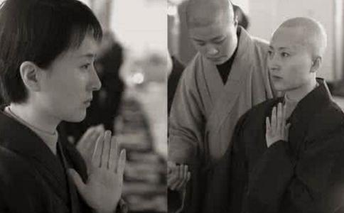

电视连续剧《红楼梦》中林黛玉的扮演者陈晓旭病故已经7年了。当时的报道说：“陈晓旭早已患上乳腺癌，其实陈晓旭是早有病情反应的，不过固执的她一直不去医院看，只吃一些中药，直到陈晓旭发现已经疼痛难忍了，才到医院做检查。正是她固执的个性，使得陈晓旭患病不愿接受治疗而最终不幸去世。”
就陈晓旭为什么固执的有病不去医治，不得而知。但，她固执的个性，使她不接受治疗而最终不幸去世，这是一种固执的结果。她吃了些中药没有作用；现代医学也称癌症为“绝症”。笔者不是说癌症治疗也没用；而是说，应该
笔者专题写
有人认为，皈依
今天与大家谈论生命与
佛教医学有它独特的学术理论；下面简介一些佛教禅宗医学的内容，希望大家进行讨论，加强了解，以便一些人从偏见中
中国传统医学讲“神形观”。禅医对“物质人体”与“生命灵魂”双观认识。禅医认为，人是物质的组成但他的生命数据永不重复。强调重复性的科学观，在生命科学中已成为教条狭隘的观念。禅医说，人无型定，法无式定，法无定法，谈法即空。禅医在这里超越了语言文字的束缚直截了当的直指动态的生命本体！这就是佛教医学先进科学的方面！
经络学说是传统医学的重要组成部分。禅医认为，古人标注的经络气穴是传教的需要，是交流的需要，它并不是经穴的真如本体。经穴的真如本体是在具有生命前提下的生成流注。临床针对的经穴具有性能质量的变化与位置的游动性。执着文字与图文坐标尺寸的经穴会影响对经穴性能的追逐与利用。这就是佛教医学对经穴独特的学术说法。
脉诊是中医的重要诊病手段，脉搏的搏动是心脏的物理传导。脉诊所指的征候多数并不掌握科学依据。但医者对病者的症状可以准确的指出并可以作为依据治疗疾病。事实可行受用！脉诊是尚未被科学认识的受用医术，这是传统医学的特色。禅医认为，脉诊对搏动的分类是参禅悟道的引导，是医者与病者心心相映的沟通。是心性本能的运用。脉诊这一客观现象，会随着科学的进步逐步的被人们认识与理解。
中医对中药的运用，并不能概括在现代人们所掌握的科学范围之内。中药的性味归经并不局限在人们所掌握的生物化学范围之内。就一株中药来说，他的主要成份是现代科学所注重的内容，但它绝非是单一成份的组成，他的合成功效绝非是科学提纯的元素的功效。中医对天然物品的运用有其不可取代的内涵。禅医认为，中医对中药的运用是人们在日常
上述学术说法要展现的是，传统医学的客观存在与需补充理性认识的内容。佛教医学与传统医学是人们非理性认识的受用医术。现代有些人的观念是，理性认识的支配就是科学性。孰不知客观规律的科学性是不依赖人的认识而存在的。佛教医学与传统医学有很多内容需要补充理性认识。有些尚未理性认识的现象给人们一种神奇的感觉。对于一些现象有人诋毁，有人利用渲染迷信。有些缺乏相关知识的人盲目随从，给自身带来危害。
佛学从教外来说，是一种哲学，是一种认识观与方法论。佛学追求客观世界如此原来的本来面貌。对客观如来事物本体的认识追求直截了当，明心见性。对客观事物直指见性的追求使得客观事物无法包装掩饰。封建迷信在这里行不通！佛学的学术内容告诉人们世上无神，如果有至高无上，那就是你本身的性！强调的是进取！
修持与参禅悟道在教外来说，就是对大脑的修整与利用的技巧。有程序有技巧的运用大脑就是启迪智慧！人类的历史要有一步对自身的进化。那就是科学的运用大脑！人类大脑的开发与利用是推动社会进步的本质！这也是佛教给人类的无量大法与智慧！
皈依佛门重要的是要学习佛法，要有追求知识的上进心。人们根据自身的水平与素质对佛学的理解也不尽相同。佛教不搞封建迷信，是无神论者，但你自己不要封建自己，不要向迷信方面靠近！
在这里我表示希望与众多的朋友进行交流。不愿社会上再有不接受治疗的朋友而放弃生命。希望朋友们弘扬佛法，崇尚科学，珍爱生命！